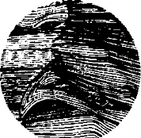

Han ilk konuğum değildi. Ondan önce de iki kez Korkut Ata ve iki kez Selcük geldi. Korkut’un ilk gelişinde bağladılar. İkincide Korkut’un demesiyle ve tutsakçılarıma armağanlar getirmesiyle bağlamadılar. Hangi gelişinde ne konuştuk bilemiyorum. İki konuşmayı bir hatırlıyorum. Belki de aynı şeyleri iki kez konuşmuşuzdur. Her iki konuşmayı da, bitişik odadaki çaşıtlar kepçe kulaklarını çam duvarlara koyarak, sonuna dek dinlediler. Dede de bir tür tutsaktı Han’ın elinde. Han İdil’deyken İdil’de, Sarkel’deyken Sarkel’deydi. Sur dışına çıkması yasaktı. Oğuz’dan gelen konukların karşısına Dede’yi çıkarıyorlar, Selcük ve oğlunu düşünüp sözlerini tartarak konuşmasını öğütlüyorlardı. Hoş, Dede zaten kendi kendinin tutsağıydı. “Bozkır dengesi” diye özetlenebilecek tutumundan vazgeçmek için pek bir neden görmüyordu.
“Dede, Tuğak gibi eri okladılar, kirpiye çevirdiler. Daha ne yapmalarını bekliyorsun?”
Bana bir göz kırpıyor. Parmaklarıyla sus işareti yapıyor, sonra: “Haa, o iş başka oğul. O bir töre cinayetiymiş. Tuğak, Han’ın hareminde karavaş bırakmamış, tümünü elden geçirmiş. Han da duyunca öyle buyurmuş! Töre’nin kestiği parmak acımaz” diyor. Dede bu, kim bilir neyi bekliyor?
Selcük ise beni içeri attıklarından sonra neredeyse bir yıl hiç görünmedi. Sonra ilk kezinde “ailecek” geldiler ziyaretime. Kocası olacak o at uşağı kılıklı alık, küçük, gürbüz, çekik gözlü bebesi ve kendisi! Zayıflamış, süzülmüş, gözlerinde bir başka duruş. Geldiler. Akıllı kız, koca kulaklardan korumak için, söyleyeceklerini bir huş kabuğuna kazımış. “Tigin’in bitiğini getirdim” diyerek, bunu benim sürekli dengimin içinde tuttuğum, ama o yarış günü Tuğak’ın evinde bıraktığım yazılı kabuklarım arasına karıştırmış. Parmağı ile gösterdi. Görünürde, yani duyulurda yerden sudan konuştuk. Alık kocasının tiki bile çıkmadı. Selcük, Bayındır Han’a dualar etti. Alkışlar sundu. Han öyle iyi yürekliymiş ki, en alt katta, hayvanların yanında bile olsa, Tuğak’ın evinde oturmalarına izin vermişmiş. Ayrıca sürekli olarak Sarkel’de kalabiliyorlarmış. Geçinebilsinler diye, Tuğak’ın yüzlerce tarlasından tam üç tanesinin ürününü Selcük’e bırakmış! Geldiğinde Bayındır’la birkaç kez görüşmüşler. “Babaların yazığım, günahını kızlar niye çeksin? Sana hiç kızgın değilim Selcük!” demişmiş iyi yürekli Han.
Gittiklerinde, Selcük’ün yazdıklarını okumak için, zincirlerimi bir an önce çözsünler diye bağırdım, çağırdım. “Çişim var” dedim. İnansınlar diye önüme bir iki damla kaçırdım. Birkaç okkalı yumruğu göze aldım. Tutsakçılarım ltbaş ile Sevinçü Emgek denen herifler içeri girdiler, ltbaş hiçbir şey sormadan yattığım yerde kaburgalarıma tekmeyi geçiriverdi. Zincirlerden ötürü iki büklüm duran gövdem acıyla gerildi. Kalın, geniş demir bilezikler bileklerimi kesti. Kökçö Çıkan’ın tekmesini anan yoksul usum yerinden çıktı, Selenge boylarına gidiverdi birden. Yoksul canım da az daha Uçmak’a ya da Tamu’ya uçuyordu.
Biraz ucunu kaçırmıştı ama, bu tekme bir işaret miydi? Bu da bizden miydi? Kendi aramızda kullandığımız gizli im ile “Tek Tanrı yolunu aydınlatsın kardeş” dedim. Herif, “Bırak bu ağızları” diyerek aynı yere bir kez daha vurdu. Sırtım kaskatı oldu. Geri kalmak islememiş olacak, diğeri de girişli. Tutsakçılarım beni iyice bir benzettikten sonra zincirimi çözerek gittiler. Kıpırdayacak durumum yoktu. İkinci öküzün son tekmesinin yarısı burnuma, yarısı ön iki dişime gelmiş, sallanan, yuvalarından oynayan dişlerimin arasından kanım sızıyordu. Şimdiye kadar, aralarında kendi kanım da olmak üzere, çok kan gördüm, çok kan kokusu aldım ama tutsak olunca insanın kanı başka mı kokuyor, duran kan bozuluyor mudur, nedir?
Gün ışığı gitmeden Selcük’ün yazdıklarını okuma tutkum bana tuzluya oturmuştu. Ayrıca, bu süre içinde gün ışığı da çekilmişti. Alacakaranlığın alacasında bulacasında ne okuyacaktım. Zorla sırtüstü döndüm. Düşünmeye başladım.
Bu Batı Türklerinin, yani Aktürklerin babadan, dededen gördüklerini unutmalarını beklemek ne bönlüktü! Yine yapacaklarını yapmış, yine kazanana kazığı atmışlardı. “Hanlar hanı neredesin?” diye bozkırlarda aradığım, uğruna, kızıllaşmış göklere doğru at teptiğim kişi, iğrenç bir çakaldan başka bir şey değildi. Sora sora bulduğum, bir görüşte vurulduğum, ne yere ne göğe koyduğum Sarkel kenti, bir kentler kahpesinden başka hiçbir şey değildi. Sarkel, düşük donlu gece karavaşı! Sarkel, er kişi değirmeni! Sarkel, darı yerine yiğit öğüten köhnemiş taş tekerlek! Sarkel... Daha böyle Sarkel kötülemelerini sürdürecektim ki ağır, yarım kulaç kalınlığındaki kapım olduğu yerde, kendi çevresinde dönerek, hafifçe gıcırdayarak açıldı. Kapımın her iki yanında loş birer açıklık belirdi. İçeri giren, sessizce, yattığım yere dek geldi. Başımı yana çevirince, Sevinçü Emgek’in olduğunu artık çok iyi bildiğim çizmeyi yine burnumun dibinde gördüm. İstemeden gerildim.
“Özrümüze bakma Tigin! O İtbaş denen it sana girişince ben de vurmak zorunda kaldım! Tek Tanrı’nın aydınlık yolunda yürüyen bir kardeşime, kardeşimden ileri Arsılan uruğunun yaralı arslanına vurdum! Tanrı yazığımı bağışlasın! Ama sana muştum var Tigin. Göz aydınlığımı isterim...”
O yoksul görünüşümle pek bir şey verebilecek gibi durmuyor olmalıydım ki, sesini iyice yumuşatarak konuşmasını sürdürdü:
“...yani şimdi hemen vermek durumunda değilsin. İlerde elin açılınca verirsin! Dinle Tigin, ben Aktürk maktürk değilim, senin gibi bir Köktürküm. Dedem şansını Batı Bozkırında denemeye karar vermiş, kalkmış gelmişiz. Ama kimliğimize düşkünüz haa... Doğu Bozkırını hiç unutmuyoruz. Neyse, bunu başka zaman konuşuruz. Haberim şu Tigin, Kitanların başına Mu Tsung Han geçmiş...”
“?”
“Haberi memleketten, Kökçö’den aldım! Dedelerimiz kardeştir. Kitanların Kuzey Çin’i ele geçiren kanadının hizmetindeymiş Kökçö ağam. Yani baştan değilmiş de, sonra bir fırsatını bulup Mu Tsung’un ordusuna geçmiş... Bey olmuş. Mu Tsung’un Batı Bozkın’na saldırması için onu kışkırtıyormuş Kökçö. Güya, herkesin edinmek için can attığı Düş Taşı ve Yada Taşı burada, şu kulede, senin odanda saklıymış! Aferin Kökçö ağama, iyi düşünmüş değil mi? Kitanlar gelince seni kurtaracak!”
Kökçö’nün adını duyunca ağrıyan kaburgalarıma bakmadan doğrulup oturmuşum. Dalga mı geçiyor diye Emgek’in yüzüne baktım. Yoo, sevinçli ve yeterince ağırbaşlı görünüyordu. O yolun ne kadar uzak olduğunu, bir orduyla aşılmasının ne kadar güç olduğunu düşündüm ama kırmadım yoksulu.
“Sağ ol Emgek! Ben kağan olunca seni de kuşçubaşım yapacağım!”
Adam gelecekteki kuşçubaşılık için candan bir “sağ ol Tigin” çektikten sonra, çekiç gibi yumruğunu dudağımda patlattı, beni kuşbaşı et boyuna gelinceye dek dövdü! Kan ter içinde soluklandığı zaman:
“Tigin, özrümüze bakma! Şimdi seni dövmesem aşağıdaki it soyuna nasıl dert anlatırım? Ben şimdi akşamın bu çağında niye yukarı çıktım, değil mi? Kuşkulanmasın yok yere! Yoksa beni senin kulluğundan alırlar, yerime kim bilir hangi it kopuk gelir! Sana kötü davranırlar, ezerler, soldururlar seni Tigin. Han olunca sen de beni dövdürürsün, ödeşiriz!”
“Artığını bile veririm, hele kağan olayım!” derken, inleyerek geri yıkıldım.
Kahkahalar atarak, gülerek çıktı özverili yoksul! Oyuncuydu da!
“Yok Tigin, artığını istemem, neyse payım o kadarını alırım!”
Yine sırtüstü yattım. Vay Kökçö Çıkan’ım! Bekliyorum Çıkan, Doğu bozkırlarından çıkageleceğiniz günü bekliyorum. Demek şu ibiş Emgek de benim gibi bir Köktürk! Demek o da benim gibi bir gizlenme ustası. Sana da alkışlar olsun Emgek! Toz kadar açık vermedin. Alkışlar sana koç yiğit! Seni ancak, bu saklanma-gizlenme-yeraltı işlerinde senin kadar kıvrak biri anlar! Yalnız kolun kopsun öküz! O ne güç öyle! Düşüncelerim yine bölündü. Bu kez elinde bir mum olduğu halde ltbaş içeri girdi. Doğruca yanıma geldi. Bu kulede başka söz başlangıcı mı yoktur nedir? Sığın tulumu gibi geniş göğsünü şişirerek:
“Tigin, biliyor musun ben öyle Ak...”
Elimle dur işareti yaparak durdurdum. Durunca sordum: “Sen bir Köktürksün, bu oynak, çıtkırıldım Aktürklerden değilsin, değil mi?”
“Nereden bildin Tigin? Babam Yenisey boylarından göçmüş elli yıl önce.”
“Bana da bir sözün var, değil mi?”
“Nereden bildin Tigin? Evet, senin teyze oğlu dediğin...” Sürdürmesini önledim. Eksiğini ben bütünledim:
“...Kökçö Çıkan, Kitan Hanı Mu Tsung’un beylerinden olmuş! Tsung, Batı Bozkırı’na saldırsın diye elinden geleni ardına koymuyormuş! Bugün yarın Sarkel kapılarına dayanacakmış...” Yoksul İtbaş’ın, şaşkınlıktan kulakları düştü. Şimdi sık sakallı kara yüzüyle tam bir it barak olmuştu. Kekeleyerek...
“Tigin, şey... Maşiah... Bilici misin? Görücü müsün? Yazık, söyleyeceklerimi önceden bildiğine göre boşu boşuna dayak yemiş olacaksın. Şimdi kusura kalmazsan seni biraz dövmem gerek! Emgek denen zibidi duruma aymasın!”
“ltbaş, bütün bunları sana, beni dövesin diye anlatmadım! Emgek de bir Köktürk, o da senin gibi gizli yolun bir yolcusu, bunu siz bilmeyebilir ve birbirinizden kuşkulanıp açık vermemeye çalışabilirsiniz ama, işte benden duymuş ol.”
“Yoo Tigin, adam seni bir güzel ıslatıp indi. O böyle yapmışken ben yapmasam olmaz!”
“ltbaş Ağam, o durumu bilmeden dövdü. Sen şimdi biliyorsun ki o da bir Köktürk!”
“Yanılıyorsun Tigin! Söylediklerin doğru ama eksik! Biz hiç konuşmadık ama birbirimizin Köktürk olduğunu hep bildik. Evet ikimiz de Köktürküz ama kanımca o aksökten geliyor ben karasökten. Onlara Akkaş bize Karakaş denir. Uzatmadan şöyle diyelim, Maşiah’ın kim olduğu konusunda görüş ayrılıklarımız var. Bu dünya işlerine de yansıyor. Seni dövmesem anında yukarıya iletir...”
İşe bak, öyle zekiydik, o kadar güzel saklanıyorduk ki, birbirimize bile güvenmiyorduk, birbirimizden bile saklanır hale gelmiştik! Hep “yönetenlere yakın olalım da bir çıkarımız olsun” demiş, ona göre davranmıştık. Yönetenlere yaranmak için kardeşlerimizi dövüyor, dövmek için birbirimizle yanşıyorduk. Boynumu büktüm. Dayaktan kurtuluş yoktu. Bari kendimi açındırarak ucuz atlatayım dedim. Ben bunları düşünürken karın boşluğuma oldukça hafif bir tekme yedim. Biraz da durumu abartıp paçayı kurtarmak için iki büklüm oldum. Meğer hayvan eniği bunu bekliyormuş. Elinde hazır ettiği kısa kalın sopayla sırtıma, kafama, nereye rast gelirse oraya öyle bir girişti ki, kımıltısız düştüm kaldım. Çıkarken:
“Aklında olsun Tigin, biz Akkaşlardan daha ustalıklı döveriz, alet işler el öğünür ne de olsa!” dedi.
Güçlükle konuşarak, niye herkesin kutsal dili az çok bildiği, kullandığı, ravlara saygı gösterdiği, bir Maşiah beklediği, söz verilmiş topraklara dönmek istediği ve inananlardan olduğu Batı kağanlığında da kendilerini saklamak gereğini duyduklarını sorabildim.
“Ah... ah Tigin... buranın düzeni hakkında bir şey bilmediğin nasıl da belli! Buradaki yerli inananlar, biz Köktürkleri inanan bile saymaz. Aralarına almaz. Geçmişte Maniheist, Budist, Şamanist olmak zorunda kalışımızı yüzümüze çarpar durur. Dönme diyip çıkar buranın Yahudileri bize. Biz de Köktürk olduğumuzu söyleyip ortaya çıkmayız tabii.”
“Yani siz açıktan doğru dine inanan bir toplulukta, gizliden aynı doğru dine mi inanıyorsunuz?”
“Evet, böyle söyleyince aptalca duruyor ama gerçek bu!”
“Peki sayıları ne biliyorsunuz? Belki de Hazar Kağanlığı’ndaki gizli Köktürk sayısı, açık Aktürk sayısından daha fazladır!”
“Bunda da doğru olabilirsin Tigin! Herkesin diğerini gizli din tutmakla suçladığına bakılırsa, bu denilenlerin yarısı bile doğruysa, ola ki Köktürkler daha kalabalıktır. Ama çekinip söylemediğimiz için bilemiyoruz tabii. Böyle gelmiş, böyle gidiyor işte!”
Somurttum, ltbaş da biraz daha oyalandıktan, dengimi karıştırdıktan, Selcük’ün yazdığı sayfayı bulduktan, benim yüreğimi ağzıma getirdikten, kabuğu ters tuttuğunu geniş bir gülümseme eşliğinde gösterip, okumuşlardan olmadığını kanıtladıktan ve “Haa Tigin, Düş Taşı gerçekten sende mi?” diye bir ağız aradıktan sonra yıkılıp gitti.
Tek bir yıldızı bile olmayan gecede düşündüm. Acılarım, kırılmış gibi sızlayan kemiklerim, eziklerim ve çürüklerim ile uyumaya çalıştım. İnleye inleye sağıma soluma dönüp kıvranırken, şu Köktürklerin, şu Doğu Türklerinin, Batı’daki kardeşlerinin ülkesindeki durumuna önce acı acı gülümsedim. Sonra haykıra haykıra güldüm. Biraz sonra Batı Türklerinin, Aktürklerin halinin daha da gülünç olduğu kafama dank etti.
Ben Tengere Tardu Tigin, tutsak olduğum için hangi yılın hangi gecesi olduğunu bilemeyeceğim o gece, biz seçilmiş Türklerin küçük gizlerini çözerken, yaşamın büyük gizlerini de çözdüm! Kişi bir kez giz çözmenin tadını almayagörsün. Giz üstüne giz çözüyor da yine doymuyor. Neyse, geçelim! Gök doğuydu. Ak batıydı. Kara kuzey. Kızıl güney. Bunu bozkırda yaşayan bebeler bile bilirdi. Aynı ordu içinde erlere bulundukları yönlere uygun donlarda at dağıtılması ta Bogatır Han’dan beri yapılan şeydi. Doğu’dayken kutumuz kuruyup, güneşimiz sönüp, talihimiz dönünce korkumuzdan başka şeyler oluvermiştik. Olmak istemeyenler ise, değişik zamanlarda da olsa geriye, benim gibi buraya gelmişti! Oradaki sayı azlığını burada, Batı’daki kalabalık ile birleştirince hemen anlaşılıyordu bu. Bir kuledeki üç kişiden üçünün de Köktürk olması rastlantı olabilir miydi? Buradaki Aktürkler aslında bizdik! Ortadan yitmemiştik. Yalnızca yön, dolayısıyla renk değiştirmiştik! Aktürklerin aslında Köktürk olduğu, çözdüğüm ilk sır oldu. Kendini Aktürk sanan bazıları da aslında Köktürk olduklarını bilmiyorlardı. Bu da ikinci sır idi. Kendini Aktürk sananlar arasında kendini Köktürk sanarak gizlenmeye çalışanların durumu nasıl gülünçtü öyle? Varan üç. Kısaca, biz, biz olduğumuzu bilmiyorduk! Biz, bulunduğumuz yönü adımıza yansıtıyorduk. Birer renkten başka hiçbir şey değildik. Üzerimizden güneş eksilince rengimiz görünmüyor, anında başka bir şey oluyorduk!
Üzerinden gün ışığı eksilmiş, karanlıklara boğulmuş bu topluluğa kesinlikle bir Maşiah gerekti. Işık gerekti, ışık! Bunu Bayındır Han ve ravlar da anlamış olsalar gerekti ki, dediklerine göre, ara ara birini öne sürüyorlardı. Evet. Kesin bir gereklilikti bu, ama onların yaktığı ışık, yalancı bir ışıktı. Bilerek, ortalığı karartmak için ışık yakıyorlardı. Yalancı ışıklara, ışık diye inanan insanlar artık başka bir ışık beklemezler; eğer bir gün ortaya çıkarsa, gerçek ışığı da fark etmezlerdi. Bu ışık ben miydim? Yıllarca kendime yakıştıramadıktan, yıllarca direnip, değilim diye düşündükten sonra, bu ışık gerçekten ben miydim? Bilmiyordum.
Sonra en büyük gizi de çözdüm. Işığım ortaya çıkmasın diye beni yaşarken karanlıklara gömenler, bana en büyük iyiliği etmişlerdi. Aydınlatarak ışığa boğacağım karanlığın kendisini armağan etmişlerdi bana. Bir Maşiah’ın ortalığı aydınlatması için önce bir karanlık gerekti! Kutsal kitaplarını da mı göstermelik okuyordu bu salaklar? Tüm yalvaçlar yolundan çıkmış toplumlara gönderilmişti. Tüm mesihler kendini kurtaramayan yoksullara, tüm faruklar iyiyi kötüyü kendi başına ayırt edemeyenlere verilmişti. Evet, hiç düşünmeksizin bana bu iyiliği yapmışlardı. Her yerin ışıl ışıl olduğu bir yerde ışıldağa ne gerek var? Güneş altında mumun ne değeri olur? Ama bu korkunç kulenin karanlığında, işte şu çatıdan gelen veya penceremden sızan ışık demetleri ne kadar değerli, ne kadar görkemliydi! Bir şeyin gerçek değeri tam aksiyle tanımlanıyordu. Karanlık olmadan aydınlık olmazdı. Şimdi işe girişmek için elde var bir karanlık.
Karanlığımı seviyorum.